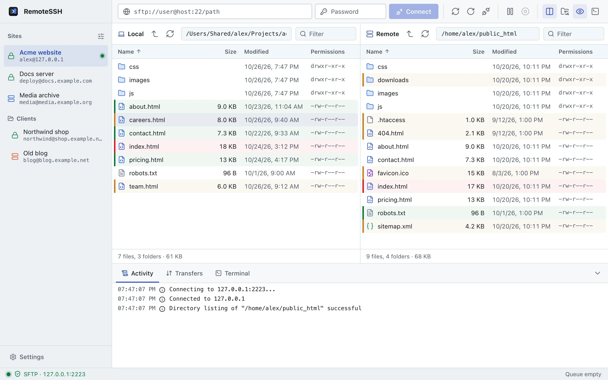
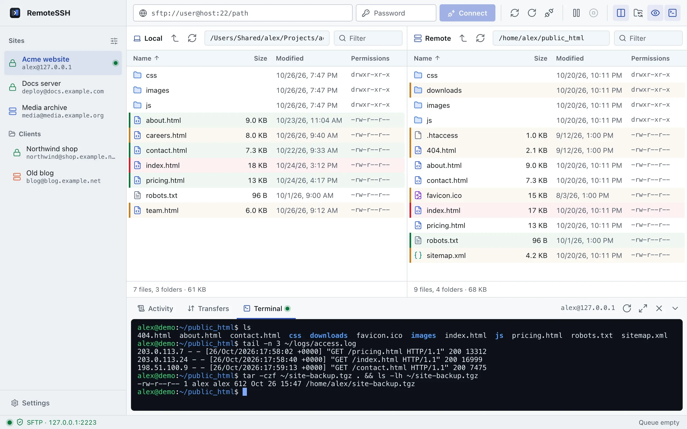
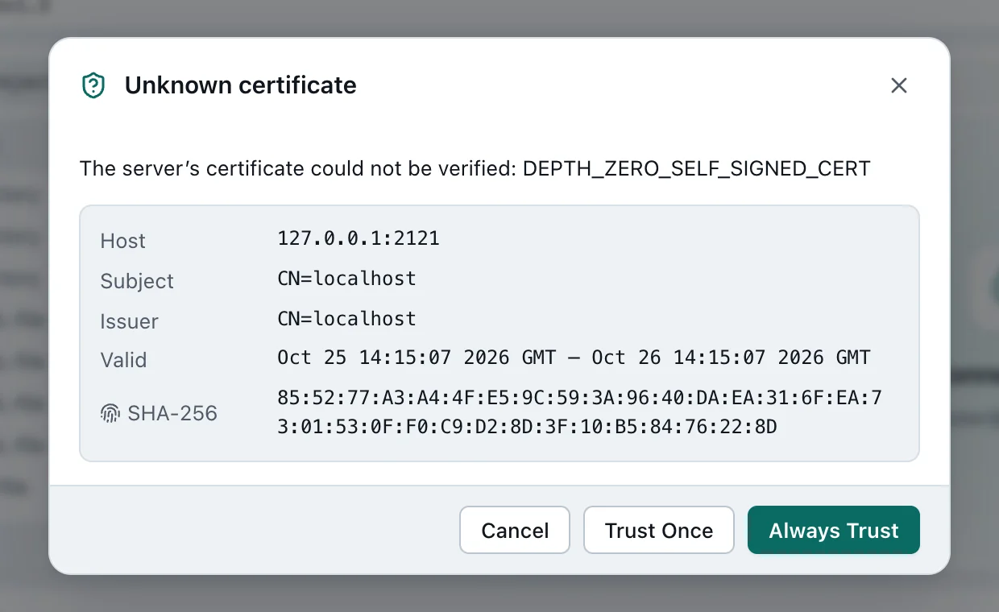

macOS
Your systemmacOS 15 Sequoia or later, Apple silicon
Download for MacUnzip and drag RemoteSSH into Applications. Signed and notarized, so it opens without a warning.
A free, open-source file transfer client for SFTP, FTP and FTPS, with an SSH terminal when you need one. No account, nothing to sign up for.
For macOS 15+, Windows 10+ and Linux.

Browse, compare, transfer and edit without switching apps. The Mac app is native SwiftUI; on Windows and Linux it runs on Electron with the same features.
Local and remote folders side by side, with sortable columns, a filter, hidden files and drag and drop between them.
Directory comparison marks files that are newer, missing or different. Synchronized browsing follows you into the same folder on both sides.
Parallel transfers, automatic retries, resume and speed limits. The queue survives restarts, and you decide what happens when a file exists.
Open a remote file in your own editor. RemoteSSH uploads it again each time you save.
Open a shell on the server, in the folder you're looking at, from the panel below the panes.
Save servers with their login, folders and settings. Export them as one .remotessh file that opens on every platform.
Drop files between the panes or from your file manager. RemoteSSH queues them, shows progress, retries if the connection drops and resumes where it stopped.
Your computer
~/Projects/acme-web
Your server
sftp://deploy@example.com/var/www

Unpack an upload, check a log or restart a service without leaving the app.
Your password is only sent once RemoteSSH knows who it's talking to.

| Protocol | Default port | Encryption | Sign in with |
|---|---|---|---|
| SFTP | 22 | Always (SSH) | Password, Ed25519 or RSA key, passphrase-protected keys |
| FTPS explicit | 21 | TLS after connecting | Password, anonymous |
| FTPS implicit | 990 | TLS from the start | Password, anonymous |
| FTP | 21 | None, or TLS if the server offers it | Password, anonymous |
Free for every platform. Every release includes all of them, and the apps update themselves.
macOS 15 Sequoia or later, Apple silicon
Download for MacUnzip and drag RemoteSSH into Applications. Signed and notarized, so it opens without a warning.
Windows 10 or 11
Installer, x64The installer updates itself. SmartScreen may warn the first time: choose More info, then Run anyway.
x64 and Arm64
AppImage, x64The AppImage and .deb update themselves. The archive tells you when a new version is out.
Release notes and older versions are on GitHub releases.
A native SwiftUI app for the Mac and an Electron app for Windows and Linux, sharing one feature set and one site file format. Bug reports and pull requests are welcome.
# Windows and Linux (Node.js 22+)
cd electron
npm ci
npm start
# macOS (Xcode 16 or later)
cd macos
./scripts/build-app.sh